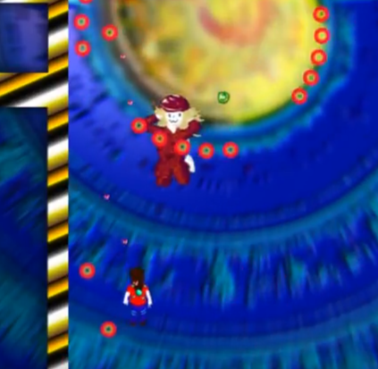

Links:
Games Page
|
Main Page
"Reviews":
Let's Go! Thingio!: Side A
[fr0g] clan official server 24/7 zk map
At Least There is Čeda Čedović
League of Piss

9 10 doh nightmare
Super Paper Mario
Playthrough Here
OMORI
Playthrough Here